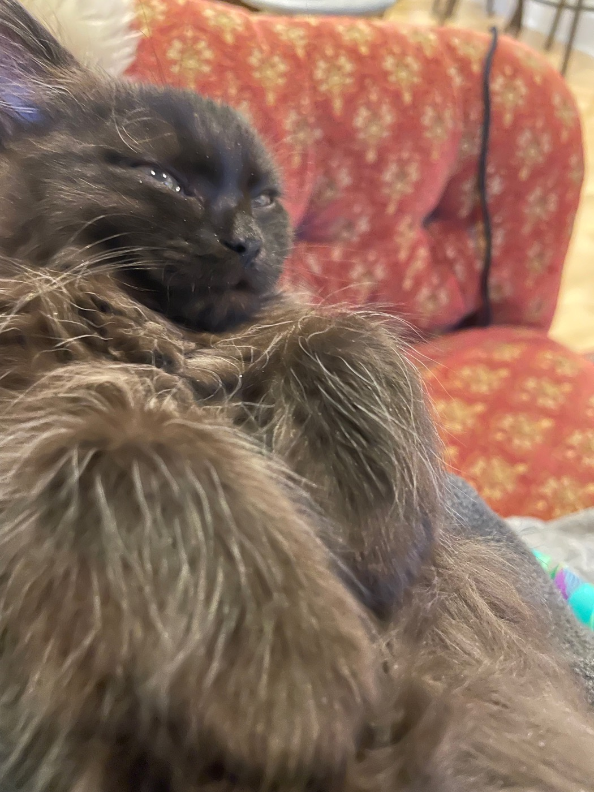
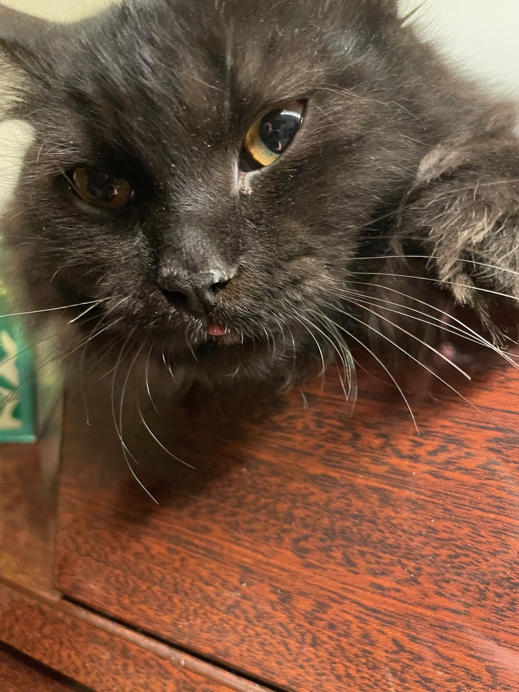
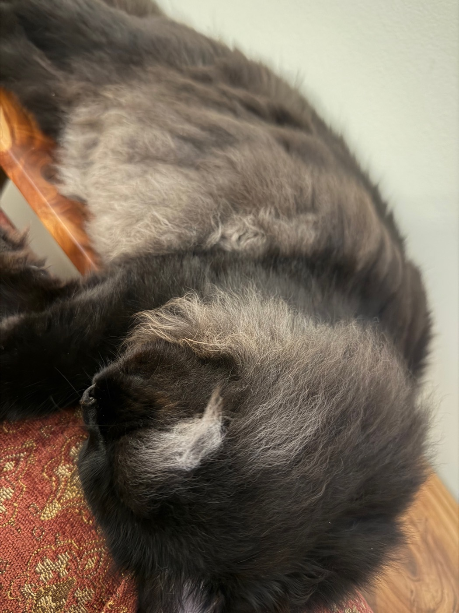
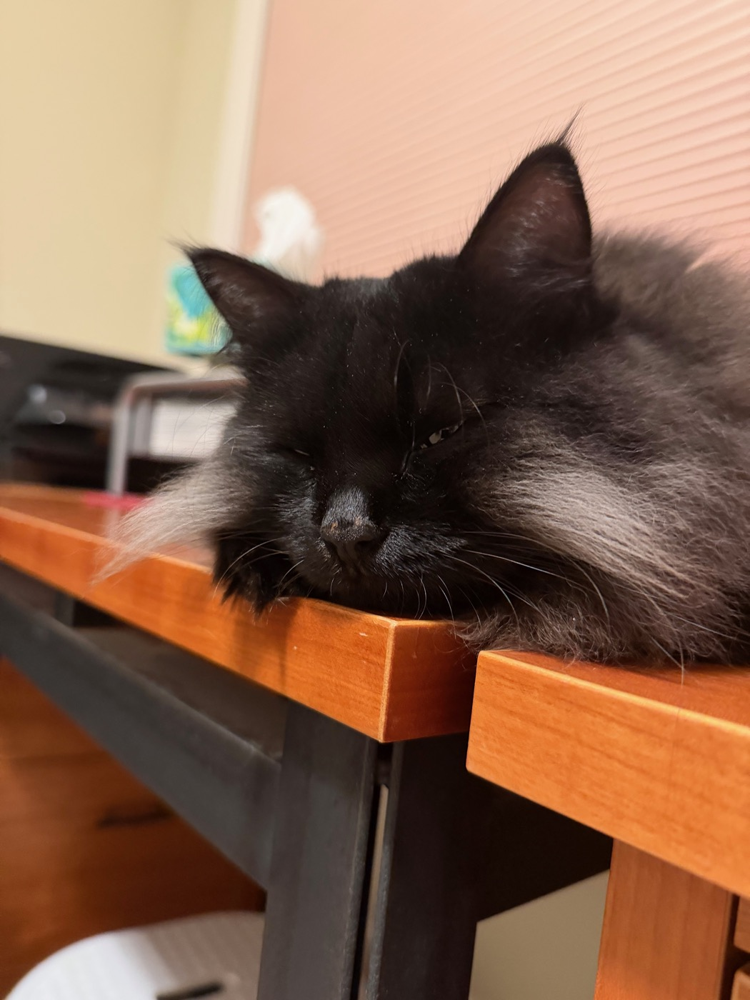

Zeta started out one color — dark, all over, nothing to read. Nearly a year on there is texture, and pale hairs coming in at her ears and along her muzzle. Four photographs, in order.

By March there was a cat in there: gold eyes, a direct stare, and a small pink tongue caught on its way back in. The expression lasted a fraction of a second. The camera happened to be faster.

The two September photographs are close and unflattering on purpose. That is where the change is. The coat is still dark but no longer one color: silvery hairs have come in at the base of her ears and over the back of her head. None of them were there in January.

They have reached her face, too. A patch along the side of her muzzle, caught while she dozed chin-down on the edge of a desk.

A kitten, a tongue, and a coat changing color on its own schedule. Nothing was staged. All of it took less than a year.